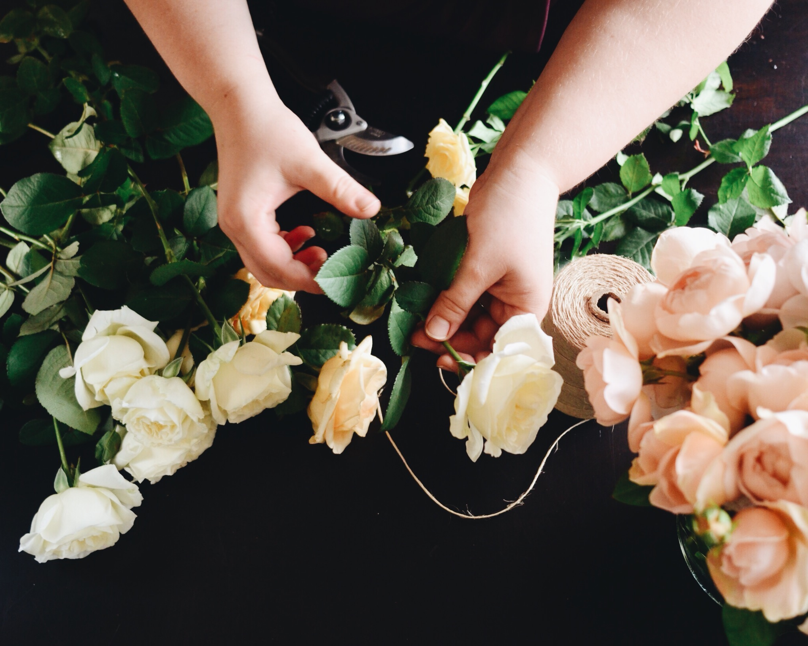

Bowerbirds - The Boweress
Elizabeth Emerson
2 July, 2018
I know you started off in Art Education and have since taken up floristry. Take me through the transition.
I’ve forever loved flowers and often dreamt about running my own business but for some reason I put it all aside to follow my other passion teaching! Too be honest I think I was scared to go out on my own. As long as I can remember I’ve also wanted to be an Art teacher. I spent a good seven years working through an undergraduate degree in Fine Arts majoring in Sculpture/ Installation/ Performance and a Bachelor and Masters in Fine Arts Education. It was during this time that one of my dearest friends Jo Ann invested in my passionate obsession with all things botanical and sweetly asked me to help her design and create the blooms for her wedding. I don’t even remember the lead up to the big day as it was such a fantastical blur of florals and DIY. This was the start of years of manic wedding love jobs, birthdays, set ups and styling for friends, family, colleagues and acquaintances. It wasn’t until three years ago while still teaching and pulling together my brother’s beautiful wedding flowers my family and friends insisted that I finally take the terrifying leap into starting my own business to see where it might lead. It’s been a huge dive into immersing myself in all things floristry, teaching myself the skills, and a whole lot of trial and error. Drawing from my fine arts knowledge and using the skills to develop my own style. I have a huge respect for the incredible growers and florists that have openly shared their extensive knowledge and offered so much support! They’ve been my teachers and extended floral family. And here I am!!! It feels so right! Despite many peoples fear of me giving up a potentially secure 9-5 profession, I’ve never felt better about taking the dive into the incredible world of high-vis accoutrement. I’ve got an incredible circle of supportive family and friends who are barracking behind us to succeed. I’m a lucky gal!
How is floristry compared to teaching? It only seemed natural for someone as creative as you to end up making things…
It’s funny you know… I expected a typical working week to be incredibly different between the two but I’m amazed at how interchangeable many of the skills required for teaching are within the realm of floristry and small business! I’ve spent so long working in a structured environment, time management and organisation have seamlessly transferred over into the running of the business particularly where events are concerned. The main difference is the amount of hands on work I’m actually doing. Having the opportunity to create beautiful things everyday and utilise all of the years of training in a hands on way makes the incredibly long hours worth it. Yes, there’s bucket loads of paperwork to keep on top of, but I’ve constantly got my hands in or on something and I LOVE IT!
What is it like working for you by yourself? Are there early mornings? Do you have to get up at 4am?
Early starts are part and parcel of the biz, but I’ve always been an early riser! Up at 4am for a 5am start at the markets to scope out what’s on offer. I like to do a lap around and chat to the lovely growers, stock up on supplies and take my time sourcing what’s best. Then it’s on! Purchasing and ordering the wares. My dear friend and right hand lady Jo Ann or my Dad Russell often meet me for the run and we head back home together for breakfast, prep and copious amounts of tea and coffee. We run to a pretty solid schedule except when we’ve got an event to prep for which is when we take it up notch – we’ve got it down to a fine art! I honestly couldn’t do it without Jo, Dad, Dave or the incredible support of my family and friends. They’re all well and truly patrons of the arts! I try and reserve set times during the day for client consults, emailing and bookwork. I’ve always got something on the go.
Do you have a Favourite Flower or combination that is your go to?
Oooohhhhh this is a hard one! I’m an absolute sucker for a big, flouncy garden rose and if it smells divine even better! And foliage is my go to. I love interesting textures and shapes. You’ll see a lot of that through my work. Given my background I put a lot of consideration into form and colour. It’s such an insanely diverse and flexible medium to work with… I’m not so much fussed about the specific blooms I’m using as much as manipulating them as interesting design elements and producing a beautiful balanced end result.
Where do you draw inspiration?
I draw inspiration from all sorts of people and places. The nature around me, interesting people I meet, music I hear, creatives, designers and art that I see and the change of season. The beautiful couples that I work with always play a huge part in inspiring the work that I create for them. Their backgrounds and stories are always an incredible starting point.
Our generation is meant to change 6 times in our lifetime, what made you decide to change careers?
When I realised I hadn’t created a single piece of art for myself, simply for the pleasure of it, in an incredibly long time. It felt like a creative void for so, so long. After constantly creating work during my years of study and in the early stages of teaching, not being able to have the time or be in the head space to create was awful. It’s an amazing feeling pouring all of your energy into nurturing and fostering the creativity of others until it’s at the complete detriment to your own. I felt I had lost sight of the balance I had initially. I think finally allowing myself, losing the fear and finding the right balance between taking on less teaching and moving forward with the business adventure has really given back to my creative output. I’ll never shut the door to teaching, I love it too much. I think the pivotal moment for me was just after my second really big, proper job. I was sitting on the floor in the lounge room pulling an all nighter, deliriously tired but couldn’t wipe the grin off my face. I knew then that I was doing the right thing.
I think that kids use their imagination to create a space to withdraw in; somehow they will always find a space that’s theirs. Did you have a bowery growing up, a consistent place/ space throughout your life?
My childhood home and suburb were my bowers growing up. My neighbour Suzie and I used to create some pretty serious cubbies around the place. We’d haul all of our bits and pieces from house to house, back and fourth and over the fence. It was those long days I remember completely losing track of time in our own creative adventures. Dad’s work shop was also one of those secret places. Sneaking in, walking around carefully touching all of the tools and peaking into the draws with all of the bits and pieces he’d collected. He always knew, but let me have my secret anyway. It was his bowery but I love that he allowed me to share his special creative space.
I think finding this space becomes harder to find as we get older…do you agree? Do you think the idea of a bower room is a necessity for the modern woman?
Definitely…. I’ll never forget spending whole weekends during holiday in Nan’s garden with my brother and cousins amongst her big ferns. We’d spend hours in make-believe places and emerge in the afternoon when we were called inside because it was getting dark! Those years of uninterrupted creative play are so hard to attain in adulthood! The idea of having a safe space to create and evolve in is so, so important as a working woman.
Tell us a little about your bowery, is it a field of flowers or the hustle and bustle of the flower markets…
My bowery is an interchangeable space I feel. The markets are such a safe space and never ending source of inspiration, creativity and a hive of activity that drives my work. The people I meet, blooms, sights and smells all influence my creative headspace and set the tone for the days creations. Our home and studio are definitely a bowery, I love the flexibility of working from home. Having the studio and enough space to move about our place if the mood takes me. We have beautiful light that streams in from the front windows, perfect for capturing snaps of the blooms in the morning and afternoon and Lou’s favourite napping spot. I often find myself lugging tools and blooms inside and spreading out on the dining table rather than in the studio simply because I love the space.. The proximity to the fridge and pantry doesn’t hurt either…
Does this space change due to the time of day? I feel that rooms/ spaces/ places can have different feelings depending on the time…?
Definitely! I quite often start the day in the studio in the cool light of the morning particularly in summer. By mid afternoon I’ll have moved into the dining room or back porch to catch the cross breeze and enjoy the shadowy afternoon light off our funny old red bricks… they glow in the sun… The changing light in spaces is such a huge mood changer.
When looking at bowerys in general, space of any kind, what is more important to you Form and aesthetic or function?
Personally, I feel function is at the forefront of any practical space, although both function and aesthetic play a huge role in creative process and thought. For me, working within a beautifully curated, well lit and organised space aids in productivity as well as providing a professional and beautiful space to hold meetings and consults. I think finding a happy medium between clinically organised show room and somewhere user friendly and functional is always a balancing act. We’re currently in the process of gutting out and refurbishing the new studio space so I’ll putting all of this into practice when thinking about finishes for the design.
I understand how tricky it can be to keep order and function in a space full of creativity. How do you create a functioning work environment?
The teacher in me reigns in my often chaotic state of mess while working. Plenty of storage and LISTS and more lists! There’s nothing more satisfying than crossing things off! I can usually maintain a fairly organised space but once I’m in my creative headspace most of my efforts to keep tidy as I go get pushed aside…. And at the end of the day, as long as I’ve managed to get through the orders and haven’t accidentally thrown out my secateurs.. I consider it a win. When it’s all said and done, I think having an initial organised set up really aids in easy straightforward clean at the end of a working day.
List 5 items that are essential to your bowery –
A Kettle – I probably scarf down way too many cups of tea a day!
My trusty secateurs – for obvious reasons! They were a gift to myself after an exciting and productive year last year…beautifully crafted and feel lovely in the hand.
A comfy space to sit – whether it’s a stool for crafting, sofa for consults or my big armchair for musing in, a spot to rest my legs and the legs of others is a top priority
A radio for blasting plenty of tunes while I work
And my trusty four legged side kick Louis – I know he’s not an ‘item’ per se but I can’t work without him. He’s my shadow, following me around the studio with his snoot in every bucket! He has a calm and sweet presence that keeps me mellow in high stress, fast paced moments in the biz, which are often!
Top 5 female influencers?
My Mother, Heather. She’s a huge and central part of my world, constant source of growth and reflection and my number one petal pushing fan. My grandmothers, -Del for her incredible gusto, feisty sense of humour and eye for design – up until recently I’d never seen a day when she wasn’t completely put together in an incredible outfit, hair set and a sharp tongue. My grandmother Margaret who’s no longer with us was the instigator of my love of all things botanical. I spent my childhood gardening and cooking with her. She was a strong, intelligent, incredible woman with a epic green thumb. So many of the amazing creatives in the industry but the incredible Dr Lisa Cooper and her wondrous body of work is beyond words- I often pass her at the markets, smile, but I’m still too nervous to say hello. My beautiful and clever Sister in law Chloé, She’s the most incredible wordsmith and curator – and advocate for women of any age and background getting out there and forging their own path. Chloé is a constant source of encouragement, reassurance and one of the first people to really make me believe I could do it all! And the incredible women growers, florists and friends that I meet at the market every week who are always willing to share their extensive knowledge and business advice. It’s such an important factor to support and nurture one another and the successes we create in such a competitive and insanely full on industry. Community not competition!
Life Mantra– Cultivate kindness – It’s cool to be kind, it’s a super source of serotonin and doesn’t cost a thing!
Last country visited– The USA, Sunny Hawaii
Last floral project you produced? We’ve had a few! but my favourite has got to be the incredible collaboration with our beautiful work experience student Ruby. We planned it from start to finish together. She was a total rockstar for the week!
Twitter or Instagram– Instagram – If it involves blooms, cake, cheese or puppies I’m all in!
Facebook or Pinterest – Pinterest I’m a hoarder of beautiful inspiration images
Favourite word– Fabulous!
Most used word– Lovely?
Country or City– City
Surf or Snow– Surf – As much a my poor fair skin doesn’t approve
Bath or shower– Bath, with out a doubt! Bubbles, books and wine I’ve been eyeing off an incredible bath rack with a built in holder for your wine glass (hint, hint hubby)
Tea or Coffee– Tea- A big pot, brewed strong with lashings of milk or in my case, much to the disgust of others, two tea bags if we’re going for the quick fix.
What’s something you’re looking forward to this year? So many things! – A shiny new website, meeting more beautiful floral enthusiasts and gorgeous loved up couples planning their big day, learning everything I can absorbing from the incredible people who mentor and guide me while also completing some small business courses. Meeting shiny new faces in our design courses when they start next year. Baking more cakes and finishing the studio renovations. Growing and developing the business, exciting collaborations with lovely creatives. Learning and evolving as an artist and taking some risks and adventures within my work. Then kicking back with cuppa to prepare for next years adventures!
